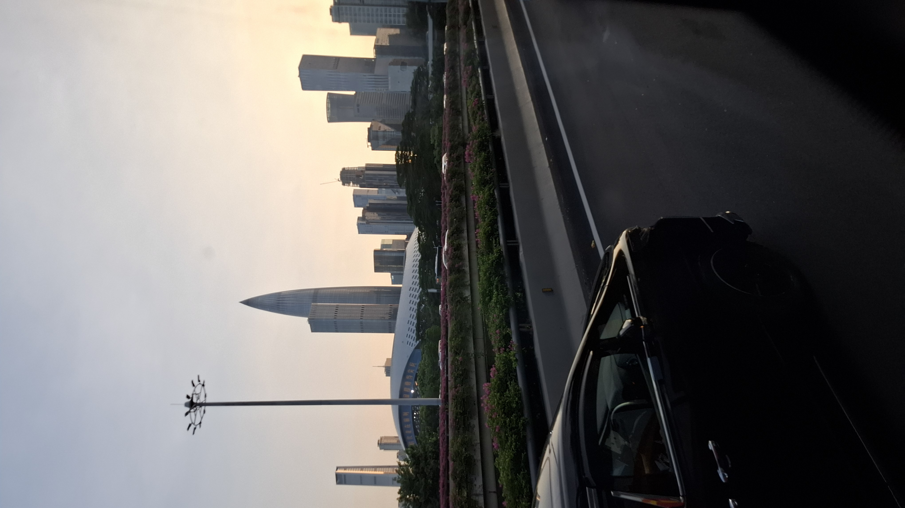

China 2025 recap!
August 20, 2025 by Demaria Walker

This August, I was able to be a part of the Huawei Seeds For The Future Program 2025 held in Dongguan and Shenzhen, China!
The Huawei Seeds for the Future Program is Huawei’s flagship talent development initiative, designed to immerse students in cutting-edge digital technology, industry innovation, and cross-cultural exchange, all while fostering an entrepreneurial spirit.
We had the privilege of connecting with peers from Tajikistan, Mongolia, Kyrgyzstan, Georgia, Azerbaijan, Trinidad and Tobago, Panama, the Dominican Republic, Honduras, Costa Rica, El Salvador, and Guatemala.
These interactions reminded me that while cultures differ, the language of technology is truly universal.
On the academic side, we explored the interconnectivity of Artificial Intelligence, 5G, and Cloud Computing: The program reminded me that digital progress is not just about tools, but about people, and how we use technology to uplift communities.
Beyond the classroom, we journeyed through Dongguan and Shenzhen, visiting Huawei’s flagship store, Tencent headquarters, the Shenzhen Museum, exhibition halls, and even government agencies. These visits opened my eyes to how deeply integrated technology is in every aspect of daily life, from commerce to culture, from governance to recreation.
In the end, the program was more than a trip; it was an experience of growth, discovery, and inspiration. It reinforced my passion for technology and my belief that young people from Jamaica and the wider Caribbean have a critical role to play as digital change-makers of the future.